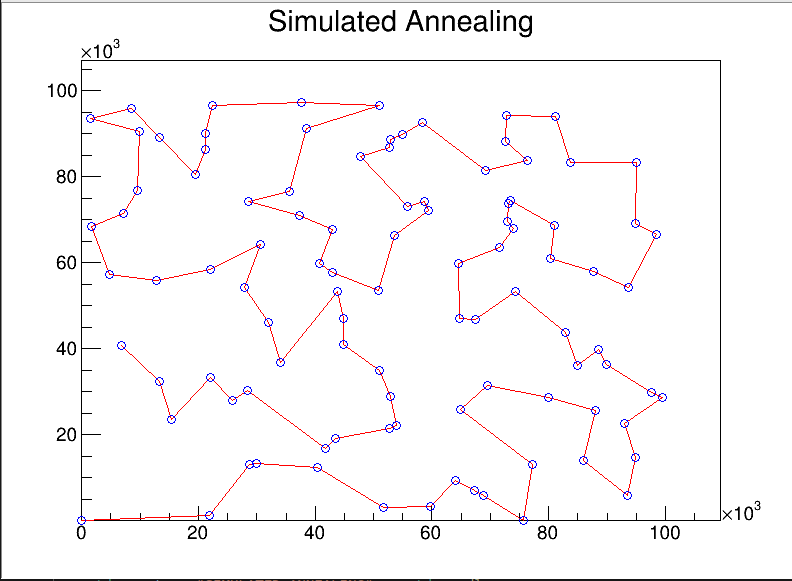

- Méthode naïve : parcours séquentiel des possibilités jusqu'à trouver un chemin assez court. Un critère de distance arrête le calcul.
- Méthode du recuit simulé : on simule le refroidissement thermique physique d'un système. Dans le monde physique, lors d'un refroidissement assez lent d'un système, il tend à se rapprocher d'un état d'énergie minimum. Le principe ici est le même avec un état excité du système correspondant à une recherche très vaste des chemins possibles puis au cours du temps la recherche s'affine jusqu'à atteindre un minimum.
- Méthode génétique : se base sur la sélection et les mutations génétiques. Au cours des générations de populations (les chemins), des croisements et des mutations correspondant à des modifications de certains chemins permettent d'atteindre un minimum au bout d'un certain nombre de génération.
